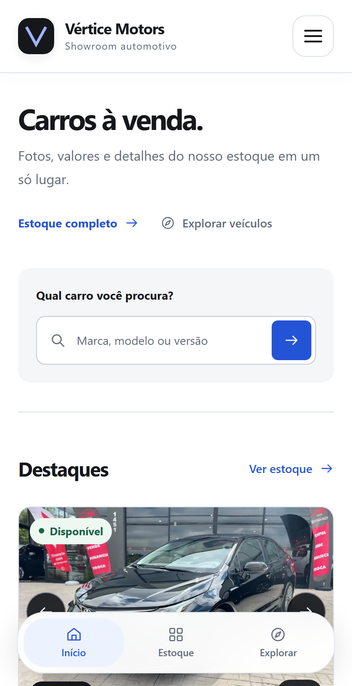
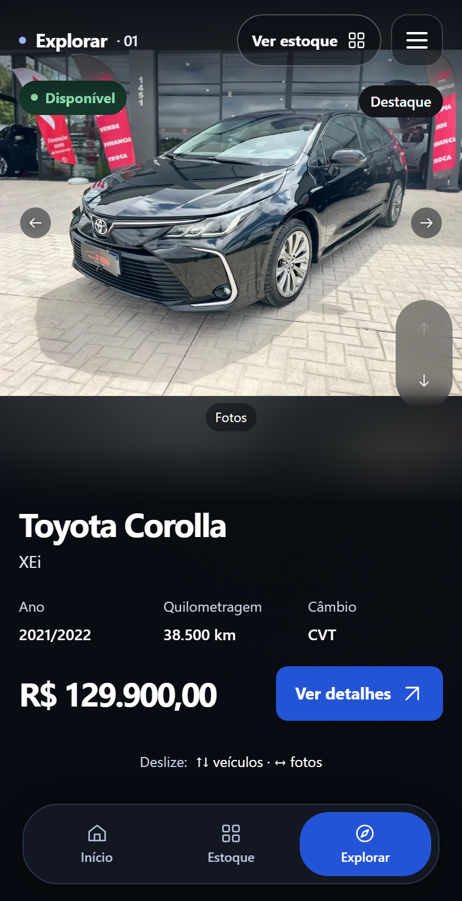
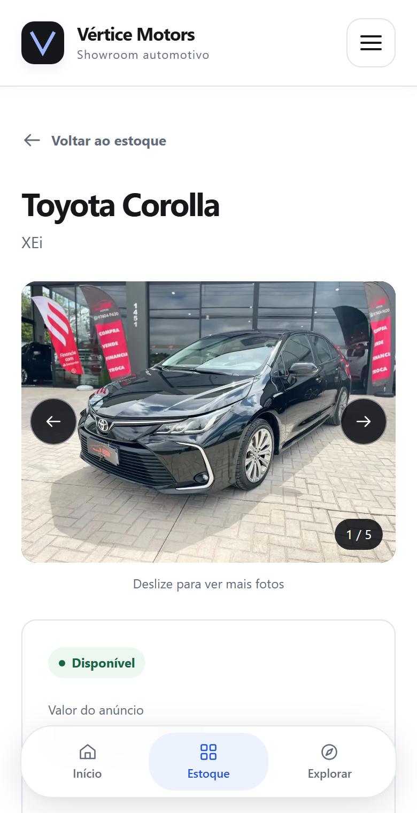

Apresentação do projeto
Concessionárias & showrooms
Do primeiro interesse à visita na loja
Seu estoque,
na palma da mão.
Uma vitrine digital para apresentar seus veículos, facilitar a escolha e levar o cliente ao atendimento da loja — no celular e no computador.
Uma experiência que acompanha o cliente.
Telas reais do projeto


O que sua loja oferece ao cliente
Recursos já implementadosEstoque fácil de consultar
Busca por marca, modelo e versão, filtros e ordenação por preço para comparar opções.
Explorar no estilo Reels
Um carro por tela: deslize para ver outros veículos e para os lados para conhecer as fotos.
Detalhes que ajudam a decidir
Preço, disponibilidade, ficha técnica, equipamentos, descrição e veículos semelhantes.
WhatsApp com contexto
Mensagens prontas conforme o acesso. Na ficha, a conversa já identifica o veículo e seu link.
Contato e visita à loja
Formulário que prepara a mensagem no WhatsApp, intenção de test drive, endereço, mapa e rota.
Vitrine conectada ao estoque
Fotos e informações vêm de uma base central. Cada anúncio tem seu próprio link para divulgação.